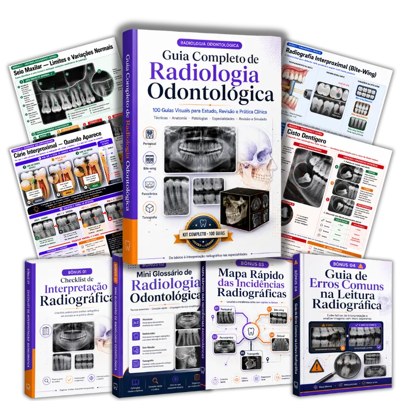
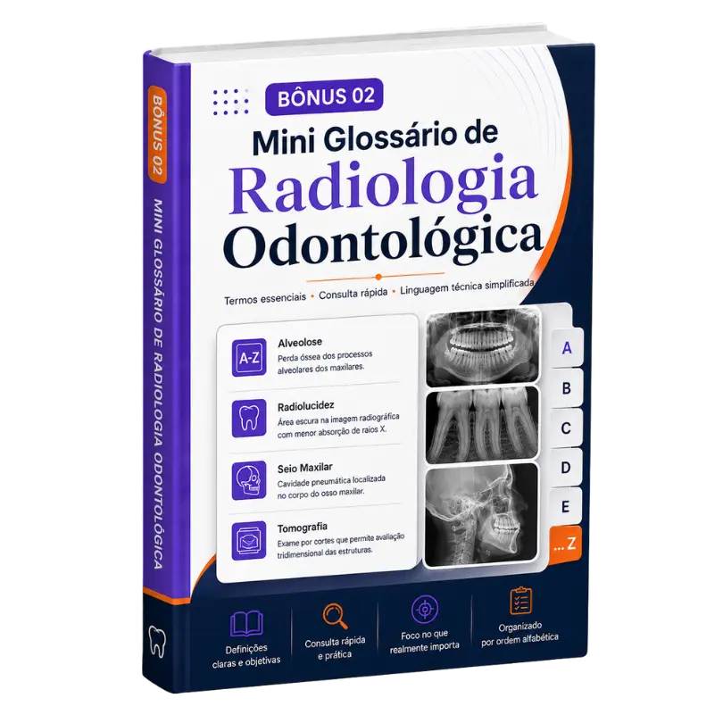
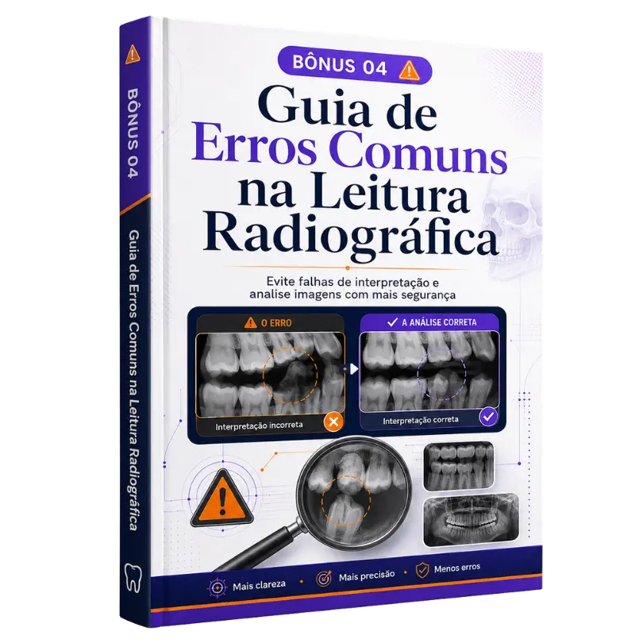

Imagens reais com marcações anatômicas e diagnósticos na palma da mão. Revise em minutos antes da prova ou do paciente.
Navegue no carrossel acima para ver os guias reais: Imagem clínica de alta resolução + marcações coloridas da anatomia + diagnóstico direto e objetivo.
Reconheça cistos, lesões inflamatórias, reabsorções e variações anatômicas no consultório com a certeza do diagnóstico correto.
Treine a velocidade do seu olhar clínico. Identifique técnicas, incidências e alterações patológicas nas questões em segundos, sem travar.
Aproveite tempos mortos no ônibus, na fila do banco ou nos intervalos entre pacientes para fixar o conteúdo de forma prática direto no celular.
Substitua apostilas teóricas cansativas por um método visual ativo. A associação entre a radiografia real demarcada e o diagnóstico direto fixa o conteúdo.
Você domina a teoria de patologia, mas na hora de olhar para uma radiografia cinza na prova ou na frente do paciente sente aquele frio na barriga.
Aumente a precisão e segurança dos seus planejamentos de implantes, cirurgias e endodontias sem precisar depender exclusivamente de laudos terceiros.
Tenha referências visuais de alta qualidade e explicações objetivas mostrando exatamente os limites anatômicos e as características de cada lesão.
Questões com imagens costumam derrubar milhares de candidatos. Treine com o método visual e garanta pontos cruciais na sua aprovação.
"Eu travava completamente nas clínicas quando o professor pedia para analisar as radiografias dos pacientes. Os guias visuais salvaram meu semestre! O fato de ter a marcação colorida facilita muito."
"Excelente material de consulta. Deixo aberto no celular no consultório. Agilizou muito meus planejamentos de endo e cirurgias simples, sem precisar ficar esperando o laudo oficial para planejar."
"Usei os guias para estudar para a residência. As questões de concurso com imagens costumam ser confusas, mas o treinamento visual me deu muita velocidade. Acertei todas de imaginologia!"
"Imaginologia era difícil para mim pela quantidade de termos parecidos. Com os cards do Anki e o PDF dos guias, passei direto na prova de anatomia radiográfica, sem ir para a final. Recomendo muito!"
"Muito prático e objetivo. O Guia de Erros Comuns é fantástico para diferenciar o que é realmente patologia de um erro de posicionamento do paciente. Ajuda muito no dia a dia da clínica."
Um passo a passo prático para descrever e analisar qualquer imagem radiográfica de forma técnica, sem esquecer nenhum detalhe essencial na clínica ou em provas.
De
Acesso rápido aos termos técnicos, definições e jargões radiográficos fundamentais para você usar nos seus laudos e avaliações com total propriedade.
DeUm guia visual compacto mostrando a indicação correta, posicionamento e enquadramento para as técnicas intra e extraorais (Periapical, Interproximal, Oclusal e Panorâmica).
De
Evite os equívocos mais frequentes na interpretação de imagens. Saiba diferenciar artefatos e variações anatômicas normais de patologias reais.
DeAcesso imediato e vitalício — 7 dias de garantia incondicional
O envio é 100% automático e imediato. Assim que a sua compra for confirmada pela plataforma de pagamento, você receberá um e-mail com os dados de acesso exclusivos para download do material e visualização.
Os guias visuais e guias bônus são disponibilizados em formatos digitais altamente otimizados para celular, tablet e computador (incluindo PDFs interativos prontos de alta resolução e arquivos configurados para estudo no aplicativo de memorização ativa Anki). Você estuda onde quiser, com o máximo de praticidade.
Sim! Os guias visuais são perfeitos para quem está nas disciplinas básicas de anatomia dental e imaginologia. Começar a treinar o olhar clínico logo no início do curso te deixará anos-luz à frente na clínica integrada e no contato real com os pacientes.
Aceitamos pagamentos via Pix, Cartão de Crédito (com opção de parcelamento imediato) e Boleto Bancário. Pagamentos via Pix e Cartão têm acesso liberado em menos de 2 minutos no seu e-mail.
Oferecemos uma garantia incondicional de 7 dias. Se por qualquer motivo você abrir os guias visuais e achar que eles não aceleram sua capacidade de interpretar exames radiográficos, envie um único e-mail para nós e devolveremos 100% do seu dinheiro sem qualquer burocracia ou questionamento.
Sim! O seu acesso é 100% vitalício e permanente. Uma vez realizada a compra, você poderá consultar os guias visuais e todos os 4 bônus exclusivos sempre que precisar, diretamente do celular, tablet ou computador, sem taxas mensais ou custos adicionais.